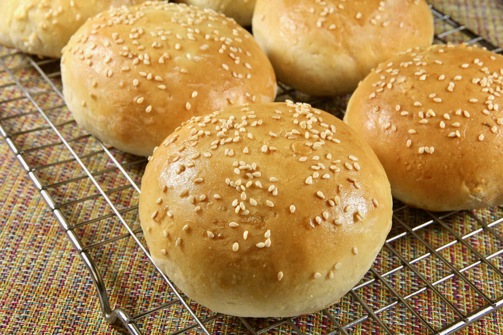

Hamburger buns

Description
Delicious hamburger buns! Homemade and fresh!
Easy to make and economical, these buns will make your dinner guests feel extra special.
Ingredients
- ¼ cup margarine, melted
- 2 cups warm milk (110 degrees F/45 degrees C)
- ¼ cup warm water
- ¼ cup white sugar
- 2 (.25 ounce) packages instant yeast
- 2 teaspoons salt
- 6 cups all-purpose flour, or as needed
Steps
- In a large bowl, stir together the milk, margarine, warm water, sugar and yeast. Let stand for about 5 minutes.
- Mix in the salt, and gradually stir in the flour until you have a soft dough. Divide into 25 pieces, and form into balls. Place on baking sheets so they are 2 to 3 inches apart. Let rise for 20 minutes.
- Preheat the oven to 375 degrees F (190 degrees C). Bake the rolls for 15 minutes in the preheated oven. Cool slightly, then split them in half horizontally to fill with your favorite burgers.
Back